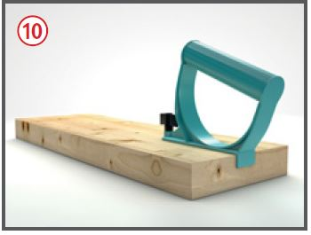
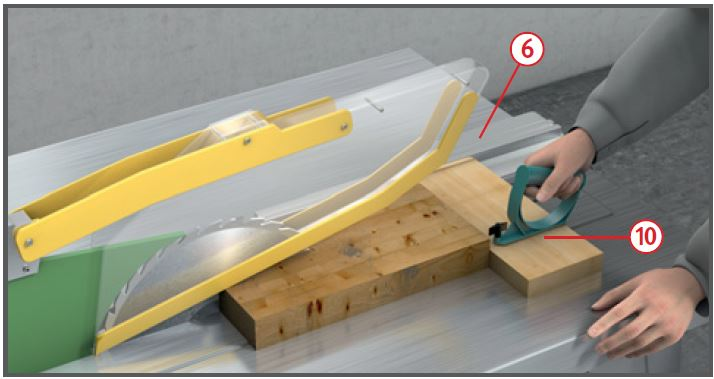
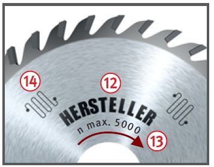
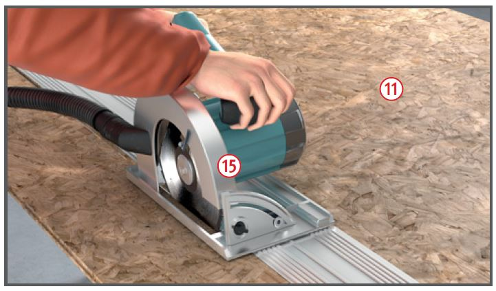

Es kann zu Schnittverletzungen,
Verletzungen durch einen
Rückschlag des Werkstückes
und einer Schädigung des Gehörs
kommen.
Schutzmaßnahmen
Betriebsanleitung des Herstellers beachten.
Steckvorrichtung mit Phasenwender verwenden.
Unterweisung anhand der Betriebsanweisung.
Gehörschutz und Sicherheitsschuhe benutzen. Lärmbereiche kennzeichnen.
Eng anliegende Kleidung tragen. Beim Sägen keine Handschuhe tragen.
Gefahrenbereich von 120 mm rund um das Sägeblatt beachten.
Spaltkeil nach Größe und Dicke
des Sägeblattes auswählen .
Vor Werkzeugwechsel oder vor Wartungs- und Instandhaltungsarbeiten Stecker ziehen .
Sägeblätter nach dem Ausschalten
nicht durch seitliches Gegendrücken abbremsen.
Bei Bedarf Tischverlängerung
und -verbreiterung einsetzen.
Soweit vom Hersteller vorgesehen, höhenverstellbares Sägeblatt
entsprechend der Werkstückdicke
verwenden .
Anfallenden Holzstaub absaugen, wenn Kreissäge in geschlossenen Räumen verwendet wird.
Zusätzliche Hinweise für Baustellenkreissägen
Selbsttätig schließende Schutzhauben dürfen nicht manipuliert werden, möglichst STOPP Schalter verwenden!
Nicht selbsttätig schließende Schutzhauben auf das Werkstück absenken.
Bei älteren Maschinen möglichst selbsttätig schließende Schutzhauben nachrüsten.
Abstand des Spaltkeils vom Zahnkranz des Sägeblattes nicht mehr als 8 mm.
Jeweils erforderliche Hilfseinrichtungen benutzen:
Parallelanschlag ,
Winkelanschlag ,
Keilschneideeinrichtung ,
Schiebestock ,
Schiebeholz mit Wechselgriff ,

Bei schmalen Werkstücken Schiebestock oder Schiebeholz mit Wechselgriff benutzen, wenn
der Abstand zwischen Parallelanschlag
und Sägeblatt weniger
als 120 mm beträgt.
Tischeinlage auswechseln,
wenn beiderseits der Schnittfuge ein Spalt von > 5 mm vorhanden ist.
Standplatz beim Arbeiten seitlich vom Risikobereich.
Splitter, Späne usw. nicht mit der Hand aus dem Bereich des laufenden Sägeblattes entfernen.
Vor dem Verlassen des Bedienungsstandes die Maschine ausschalten.
Parallelanschlag so weit zurückziehen, dass ein Klemmen des Werkstückes vermieden wird. Faustregel: Das hintere Ende des Anschlags stößt an eine gedachte Linie, die etwa bei der Sägeblattvorderkante beginnt und unter 45° nach hinten verläuft.
Großformatige Platten mit Handkreissäge und Führungsschiene schneiden .

Zusätzliche Hinweise für Kreissägeblätter
Nur Kreissägeblätter verwenden, die mit dem Namen oder Zeichen des Herstellers gekennzeichnet sind .
Bei Verbundkreissägeblättern muss zusätzlich die höchstzulässige Drehzahl angegeben sein. Angegebene Drehzahl nicht überschreiten .
Lärmarme Sägeblätter benutzen .
Beschädigte Sägeblätter, z. B. solche mit Rissen, Verformungen, Brandflecken, aussortieren.

Zusätzliche Hinweise für Handmaschinen
Spaltkeilabstand vom Zahnkranz nicht mehr als 5 mm, wenn in der Betriebsanleitung des Herstellers ein Spaltkeil gefordert wird.
Schnitttiefe richtig einstellen: bei Vollholz höchstens 10 mm mehr als Werkstückdicke.
Handmaschine nicht mit laufendem Sägeblatt ablegen.
An der Handmaschine muss der gesamte Zahnkranz des Blattes über der Auflage mit fester Verkleidung versehen sein ⑮.
Maschine prinzipiell mit beiden Händen führen und Werkstück fixieren.

Arbeitsmedizinische Vorsorge
Arbeitsmedizinische Vorsorge
nach Ergebnis der Gefährdungsbeurteilung
veranlassen (Pflichtvorsorge)
oder anbieten (Angebotsvorsorge).
Hierzu Beratung
durch den Betriebsarzt.
Beschäftigungsbeschränkungen
Jugendliche über 15 Jahre dürfen nur unter Aufsicht eines Fachkundigen und wenn es die Berufsausbildung erfordert an Baustellenkreissägen und mit Handkreissägen arbeiten.
Jugendliche unter 15 Jahre
dürfen nicht an den Maschinen beschäftigt werden.